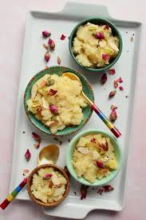

Desserts & sweets
Suji Halwa (Semolina Pudding)

Ingredients:
1/2 cup semolina (suji)
1/4 cup ghee (clarified butter)
1/2 cup sugar
1.5 cups water
2–3 cardamom pods (crushed)
Chopped nuts (cashews, almonds) for garnish
Instructions:
Heat ghee in a pan, add semolina, and roast until golden and aromatic.
In a separate pot, boil water with sugar and crushed cardamom pods.
Slowly add the sugar water to the roasted semolina, stirring continuously to avoid lumps.
Cook until the mixture thickens and leaves the sides of the pan.
Garnish with nuts and serve warm.
Coconut Ladoo

Ingredients:
1/4 cup basmati rice (washed and soaked for 30 minutes)
4 cups milk
1/4 cup sugar
1/4 tsp cardamom powder
Chopped nuts (almonds, pistachios) for garnish
Instructions:
In a pot, boil milk and add soaked rice.
Simmer on low heat, stirring frequently, until rice is fully cooked and the mixture thickens.
Add sugar and cardamom powder, cook for a few more minutes.
Garnish with chopped nuts and serve warm or chilled.
Besan Ladoo (Gram Flour Sweet Balls)
.jpg)
Ingredients:
1 cup gram flour (besan)
1/2 cup ghee
3/4 cup powdered sugar
1/4 tsp cardamom powder
Chopped nuts (optional)
Instructions:
In a pan, heat ghee and add gram flour. Roast on low heat until golden and aromatic.
Remove from heat, let it cool slightly, then add powdered sugar and cardamom powder.
Mix well, and shape the mixture into small balls (ladoo).
Garnish with nuts if desired and let set before serving.
Gulab Jamun

Ingredients:
1 cup milk powder
1/4 cup all-purpose flour
1/4 tsp baking soda
1 tbsp ghee
Milk as needed (about 1/4 cup)
Oil or ghee for frying
For syrup: 1 cup sugar, 1 cup water, a few cardamom pods, a few drops of rose water
Instructions:
In a bowl, combine milk powder, flour, baking soda, and ghee. Gradually add milk to make a soft dough.
Divide the dough into small balls.
Heat oil or ghee, and fry the balls on low heat until golden brown.
Meanwhile, make the syrup by boiling sugar, water, and cardamom until slightly thick. Add rose water.
Soak the fried balls in the warm syrup for at least 30 minutes before serving.